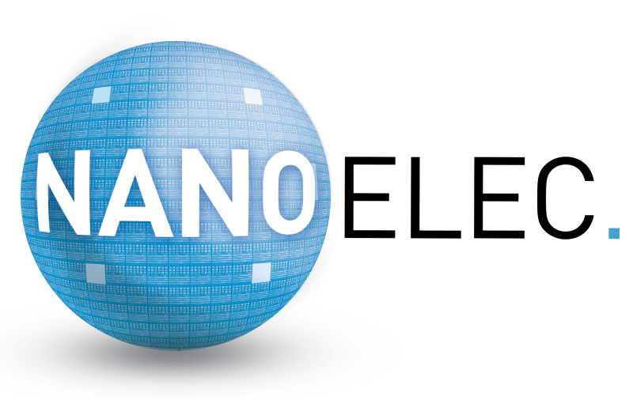
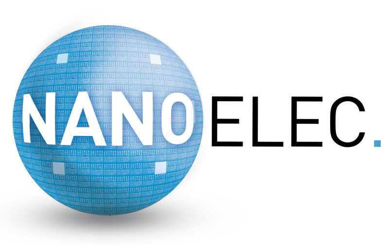

Injection de fautes : attaques physiques, protections logicielles et mécanismes d’évaluation de la robustesse
Journée thématique – Jeudi 23 mai 2019, Minatec, Grenoble
Description
Cette journée s’inscrit dans la suite de la journée SERTIF organisée à Grenoble qui avait réuni une soixantaine de personnes. Cette journée précède les journées nationales du pré-GDR Sécurité (30 mai – 1 juin) et est un évènement associé au GT Sécurité des Systèmes Matériels commun au GDR SoC2 et au GDR Sécurité Informatique.
Ce workshop a pour objectif de réunir la communauté de la recherche française en analyse de fautes sur des systèmes de sécurité. Cette communauté est très avancée sur le plan mondial, et travaille sur des aspects très variés :
- attaques en injection de fautes et modèles de fautes,
- simulation / méthodes formelles pour comprendre l’impact des fautes,
- preuve de sécurité,
- contremesures,
- implémentation de stratégies de détection à la compilation, etc.
Un premier objectif de la journée est de consolider ce savoir-faire pour faire émerger des recherches plus globales.
En parallèle, le contexte des systèmes embarqués sécurisés évolue assez rapidement, et il est important d’envisager l’évolution des attaques mais aussi des systèmes. Aujourd’hui, il y a un changement de paradigme pour aller des systèmes fermés vers des systèmes ouverts, qui implémentent des TEE (Trusted Execution Environments). Egalement, les injections de fautes deviennent plus complexes, avec par exemple la possibilité de réaliser des injections multiples.
Cette journée vise à aborder et à favoriser les discussions sur l’ensemble de ces sujets, au travers de présentations et de discussions entre les participants.
Organisateurs
Cette journée est organisée par :
- Sylvain Guilley, Telecom ParisTech / Secure-IC
- Karine Heydemann, Sorbonne Université / LIP6
- Marie-Laure Potet, VÉRIMAG, Grenoble Alpes Cybersecurity Institute
- Guillaume Bouffard, ANSSI
- Damien Couroussé, CEA
Soutien financier
Cette journée est financée par :
- l’IRT NanoElec, dans le cadre du programme Pulse
- Cybersecurity Institute Grenoble
- le GT Sécurité des Systèmes Matériels commun au GDR SoC2 et au GDR Sécurité Informatique
 
